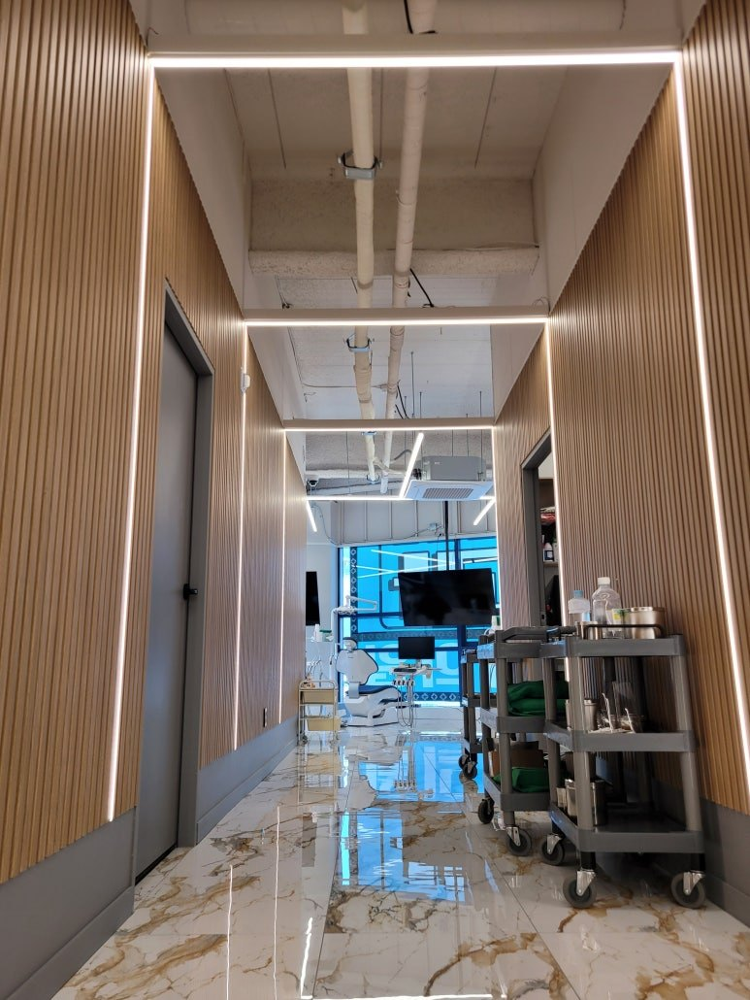
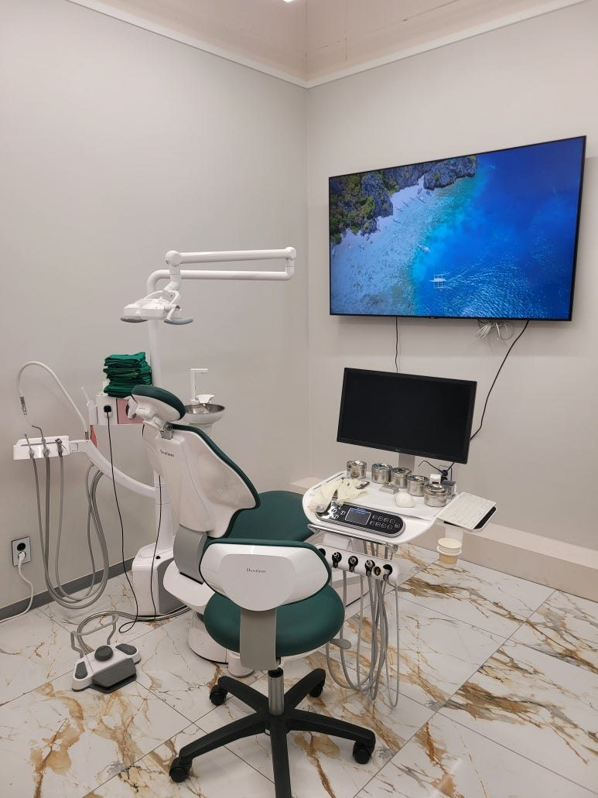
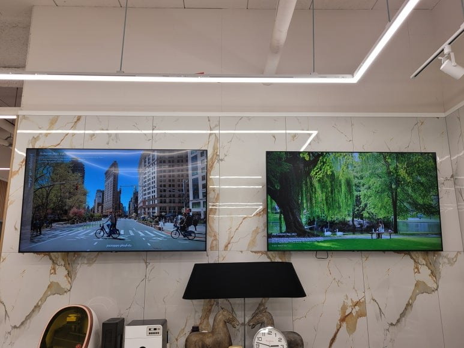
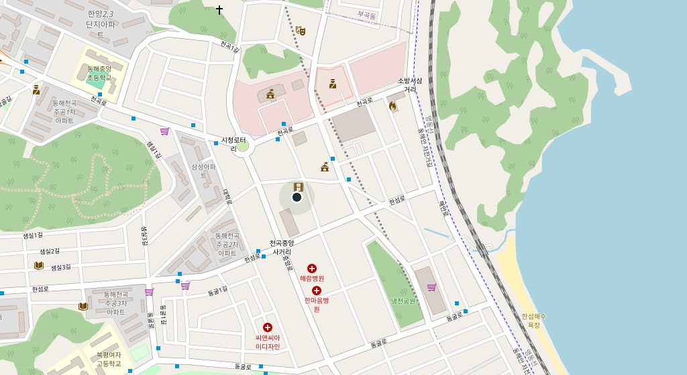

임플란트
치아를 잃은 자리에 인공치근을 식립하고 보철물을 연결합니다. 잇몸뼈가 부족한 경우에는 뼈이식이나 상악동 거상술이 함께 필요할 수 있습니다.
01
뉴욕치과의원은 강원특별자치도 동해시 천곡동, 한섬로변 현진빌딩 4층에 있습니다.
대기 공간과 진료실, 상담 공간을 나누어 두었습니다. 진료를 받기 전에 구강 상태와 치료 과정, 비용을 먼저 설명드리고, 필요한 시술과 그렇지 않은 시술을 구분해 안내하는 것을 기본으로 합니다.
월요일과 수요일은 저녁 8시까지 진료하여, 낮 시간에 방문이 어려운 분들도 진료를 받으실 수 있습니다. 진료 시간은 아래 진료시간표와 같으며, 방문 전 전화로 확인하시면 대기 시간을 줄일 수 있습니다.



02
치과의원에서 보는 일반적인 진료 항목입니다. 증상과 구강 상태에 따라 진료 방법이 달라집니다.
치아를 잃은 자리에 인공치근을 식립하고 보철물을 연결합니다. 잇몸뼈가 부족한 경우에는 뼈이식이나 상악동 거상술이 함께 필요할 수 있습니다.
크라운, 브릿지, 틀니 등 상실된 치아를 대신하는 보철물을 제작해 끼웁니다. 남은 치아와 잇몸 상태를 확인한 뒤 재료와 방법을 정합니다.
충치를 제거하고 채우거나, 신경까지 진행된 충치는 신경치료로 자연 치아를 유지합니다.
잇몸이 붓고 피가 나는 경우 원인을 확인하고, 스케일링과 잇몸 치료를 진행합니다.
정기 검진과 스케일링으로 구강 상태를 확인하고, 집에서의 칫솔질과 관리 방법을 함께 안내합니다.
성장기 아동의 충치 치료와 정기 검진을 봅니다. 진료에 어려움이 있는 경우 보호자와 상의해 진행합니다.
위 항목 외의 진료는 전화(033-533-2979)로 문의해 주십시오.
03
임플란트는 심는 일로 끝나지 않고, 그 뒤로 오래 쓰는 치료라고 생각합니다.
잇몸뼈의 상태와 맞물리는 힘을 먼저 확인하고, 필요한 시술과 그렇지 않은 시술을 나누어 설명드린 뒤 진행합니다. 진료실에서 결정하실 수 있도록 치료 과정과 비용을 미리 알려드립니다.
04
구강 상태에 따라 순서와 기간은 달라집니다. 아래는 일반적인 진행 순서입니다.
3D 콘빔CT로 잇몸뼈의 두께와 높이, 신경과 혈관의 위치를 확인합니다. 현재 구강 상태와 전신 질환, 복용 중인 약물을 함께 확인합니다.
식립 위치와 보철 방법을 정하고, 필요한 부가 시술이 있는지 확인합니다. 비용은 진료 전에 항목별로 안내드립니다.
국소마취 후 잇몸뼈에 인공치근을 식립합니다. 뼈이식이나 상악동 거상술이 필요한 경우 함께 진행합니다.
인공치근과 잇몸뼈가 단단히 붙는 기간을 거친 뒤 지대주와 크라운을 연결합니다. 교합을 확인하며 조정합니다.
임플란트 주변 잇몸과 보철물의 나사 풀림, 교합 변화를 정기적으로 확인합니다.
05
의료법 제45조 및 같은 법 시행규칙 제42조의2에 따라 게시합니다.
| 제조국 | 브랜드명 | 비용 | 포함 내역 |
|---|---|---|---|
| 스위스 | 스트라우만 (Straumann) | 1,800,000원 | 지르코니아 크라운 및 맞춤형 또는 제조사 정품 기성 지대주 포함 |
| 스웨덴 | 아스트라 (Astra) | 1,800,000원 | 지르코니아 크라운 및 맞춤형 또는 제조사 정품 기성 지대주 포함 |
| 프랑스 | 앙서지 (Anthogyr) | 1,300,000원 | 지르코니아 크라운 및 맞춤형 또는 제조사 정품 기성 지대주 포함 |
| 대한민국 | 덴티움(수퍼라인) | 980,000원 | 지르코니아 크라운 및 맞춤형 또는 제조사 정품 기성 지대주 포함 |
| 대한민국 | 국산 정품 임플란트 | 490,000원 | 지르코니아 크라운 및 맞춤형 또는 제조사 정품 기성 지대주 포함 |
06
임플란트는 치조골 상태와 시술 후 관리에 따라 결과가 달라집니다. 외과적 시술 특성상 수술 후 출혈, 부종(부기), 통증, 멍, 감염, 상악동염, 일시적 또는 지속적인 감각 이상(하치조 신경 손상 가능성), 골유착 실패, 보철물 나사 풀림 및 보철물 파절 등의 부작용이 발생할 수 있습니다. 당뇨·고혈압·골다공증 등 전신질환 보유 여부와 복용 중인 약물에 따라 치유 속도와 합병증 위험에 개인차가 있으므로 시술 전 의료진에게 반드시 알리셔야 하며, 시술 후에는 정기적인 구강 검진과 구강 위생 관리가 필요합니다.
07
공휴일은 휴진합니다. 방문 전 전화로 확인하시면 안내가 빠릅니다.
| 월요일 | 10:00 – 20:00 | 야간진료 |
|---|---|---|
| 화요일 | 10:00 – 18:00 | |
| 수요일 | 10:00 – 20:00 | 야간진료 |
| 목요일 | 휴진 | |
| 금요일 | 10:00 – 18:00 | |
| 토요일 | 10:00 – 13:00 | 점심시간 없음 |
| 일요일 | 휴진 |
08

뉴욕치과의원 · 현진빌딩(롯데시네마 동해 건물) 4층 지도 © OpenStreetMap contributors강원특별자치도 동해시 한섬로 111-7
현진빌딩(롯데시네마 동해 건물) 4층 404호 (천곡동 863)
한섬로변 현진빌딩(롯데시네마 동해 건물) 4층 404호입니다. 주차는 공용주차장(건물 앞)을 이용하실 수 있습니다.